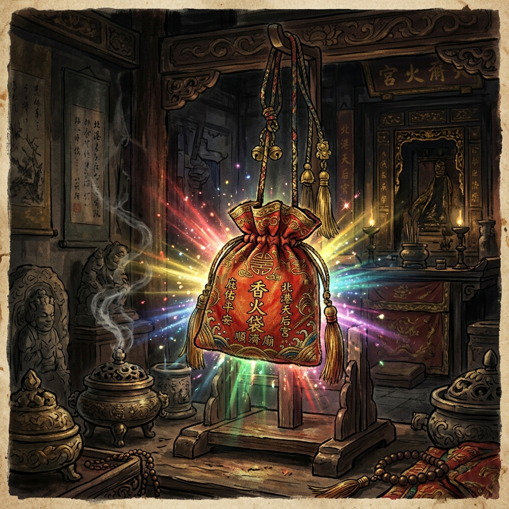

老二媽會的笨港進香不僅是宗教儀式，更是一部融合了社會階層協同、地理整合與生存適應的文化發展史。

雍正年間香火袋顯聖傳奇
起源傳說：南瑤宮的建立與一袋香火息息相關。雍正年間，一位來自笨港的楊姓窯工帶著「笨港天妃廟」的香火袋到彰化工作。他將香火袋掛在工作場所，夜間該香火袋頻頻散發出五彩毫光，神蹟顯赫，引來地方信徒的熱烈奉祀。最終，這場信仰熱潮促成了彰化南瑤宮的建立。
飲水思源的傳統：由於南瑤宮媽祖是從古笨港天后宮分香而來，在清領時期，為了感念神恩並象徵「飲水思源」，老二媽會等核心組織約每四年會共同發起一次前往笨港天后宮的進香之旅。這是中台灣早期規模最宏大、動員最深遠的跨區域朝聖活動。
面對自然災害與環境變遷，老二媽會展現出驚人的適應力，將進香活動化繁為簡、轉化為全新的跨縣市遶境。
嘉慶年間，一次罕見的特大洪水分流沖毀了笨港天后宮，導致原本的進香祖廟不復存在。面對這一巨大的歷史變故，進香活動並未因此中斷，老二媽會等組織展現了高度的整合與決策能力，迅速演變出新的文化協作模式：
點擊或將滑鼠懸停於時間軸節點，深入瞭解老二媽會的歷史里程碑。
笨港楊姓窯工攜帶「笨港天妃廟」香火袋至彰化，散發五彩毫光引發神蹟傳說。彰化地方紳商及百姓受其感召，集資籌建南瑤宮。
相傳由臺中樹仔腳林家的秀才籌組，號召廣大佃農參與，成功跨越階級界線，建立穩固的信仰網絡，並定期發起「回祖廟進香」之傳統。
笨港天后宮遭洪水沖毀，老二媽會決策將進香改為「笨港地區遶境」，並開創改往北港朝天宮與新港奉天宮駐駕會香的折衷整合路線。
登記為「社團法人台灣南瑤宮老二媽會」，精簡行政體系為「十大角頭」，並每三年輪值一次「二媽年」進香主辦。結合現代 OMO 零售與數據思維，保存並延續文化。